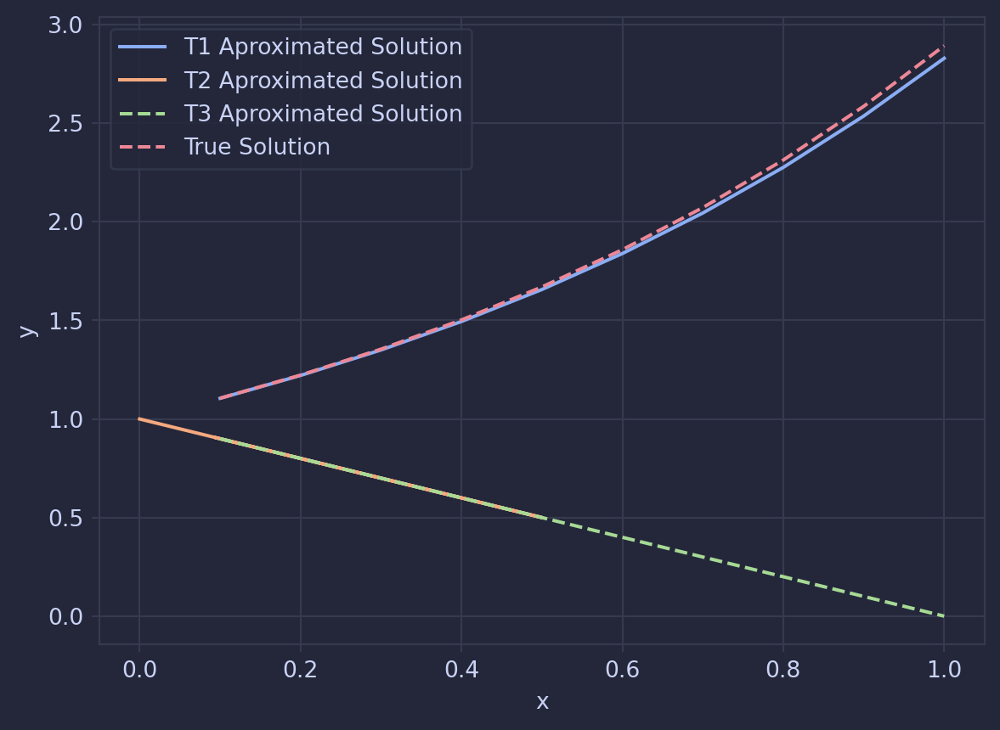
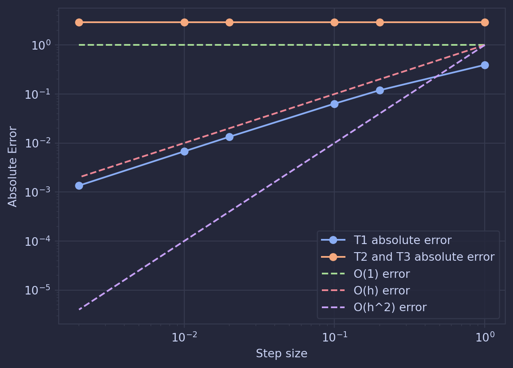

Optimising the settings for the ODE solver
In the last post in this series, I introduced my method for approximating ODEs. But after re-rereading it, I found myself questioning the step where I convert the ODE into a matrix.
This is best exemplified by the ODE \(y'' = x + y\) which goes through the point \(y(0) = 1\) and \(y'(x) = 1\). Converting it into a matrix, we would define \(T\) as:
\[ T_1 = \begin{bmatrix} 1 & 0 & 0 & 0 & 0\\ 0 & 1 & 0 & 0 & 0\\ 0 & 0 & 1 & 0 & 0\\ 0 & 0 & 0 & 1 & 0\\ 0 & 1 & 1 & 0 & 0\\ \end{bmatrix} \]
However, rearranging this ODE into \(x = y'' - y\) or \(y = y'' - x\), it would be just as reasonable to define T as:
\[ T_2 = \begin{bmatrix} 1 & 0 & 0 & 0 & 0\\ 0 & 0 & -1 & 0 & 1\\ 0 & 0 & 1 & 0 & 0\\ 0 & 0 & 0 & 1 & 0\\ 0 & 0 & 0 & 0 & 1\\ \end{bmatrix} \] \[ T_3 = \begin{bmatrix} 1 & 0 & 0 & 0 & 0\\ 0 & 1 & 0 & 0 & 0\\ 0 & -1 & 0 & 0 & 1\\ 0 & 0 & 0 & 1 & 0\\ 0 & 0 & 0 & 0 & 1\\ \end{bmatrix} \]
So does this matter? Since they are all equaly valid ways of representing the ODE, surley they will all lead to the same conclusion. However Using each of these matrices the ODE we get very different solutions. \(T1\) is the closet, \(T3\) and \(T2\) are both equally far off.
Truncation Error
Truncation error is the error that is introduced by approximating a infinite series, such as the Taylor series we use, with a finite number of terms. I’m suspecting in this case, that \(T_1\) introduces the least amount of truncation error at each step and this is why it is the best aproximation of the ODE.
We can define our truncation error (\(R\)) as the difference be the true value (\(Y^*\)) and the predicted value (\(Y\)). In our aproximation, this is defined as:
\[R = Y^*(x+h) - Y(x+h) = Y^*(x+h) - T \cdot S \cdot Y(x) \]
Where \(S\) is the stepping matrix and \(T\) is the transformation matrix.
Since our approximation is based on the Taylor series, the truncation error is the remaining terms in the series that aren’t used. When \(k\) terms of the taylor series are used, the truncation error (\(r\)) is :
\[ r = \sum_{n = k+2}^{\infty} \frac{\mathbb y^{n}(x)}{n!}\cdot(h)^n\]
Since \(y^{n}\) be pulled out as a constant for a given step, the limit of the magnitude of this error can be defined using big-O notation, such that when \(k\) terms are used, \(r\) is \(O(h^{k+3})\).
Looking at just the stepping matrix, we can see the truncation error is:
\[S = \begin{bmatrix} 1 & 0 & 0 & 0 & 0\\ 1 & 1 & 0 & 0 & 0\\ 0 & 0 & 1 & h & \frac{h^2}{2}\\ 0 & 0 & 0 & 1 & h\\ 0 & 0 & 0 & 0 & 1\\ \end{bmatrix} \rightarrow R = \begin{bmatrix} 0\\ 0\\ O(h^3)\\ O(h^2)\\ O(h)\\ \end{bmatrix}\]
Taking it back to the above example of \(y'' = x + y\), and the three transformation matrices it defines, we can apply the transformation matrices to the vector \(R\) of the standard stepping matrix to get the truncation error for each of the approximations.
\[T_1 \cdot R = \begin{bmatrix} 0\\ 0\\ O(h^3)\\ O(h^2)\\ O(h^3)\\ \end{bmatrix} \]
\[T_2 \cdot R = \begin{bmatrix} 0\\ O(h)\\ O(h^3)\\ O(h^2)\\ O(h)\\ \end{bmatrix} \]
\[T_3 \cdot R = \begin{bmatrix} 0\\ 0\\ O(h)\\ O(h^2)\\ O(h)\\ \end{bmatrix} \]
Now looking at the magnitude of these vectors:
\[ |T_1 \cdot R | = \sqrt{(O(h^3))^2 + (O(h^2))^2 + (O(h^3))^2} = O(h^2) \] \[ |T_2 \cdot R | = \sqrt{(O(h))^2 + (O(h^3))^2 + (O(h^2))^2 + (O(h))^2} = O(h) \] \[ |T_3 \cdot R | = \sqrt{(O(h))^2 + (O(h^2))^2 + (O(h))^2} $ = O(h) \]
This shows that \(|T_1 \cdot R |\) shrinks as \(h\) gets smaller faster than when you use \(T_2\) or \(T_3\). More generally, you can say that \(T_1\) will lead to the least error.
Now these are the errors for each step, so now looking at the truncation error for the whole approximation, we can multiply the error by the number of steps.
Say we want to find the value for for the curve at \(x=1\), we would need to take \(1/h\) steps to find this value.
\[ |T_1 \cdot R | \cdot \frac{1}{h} = O(h) \] \[ |T_2 \cdot R | \cdot \frac{1}{h} = O(1) \] \[ |T_3 \cdot R | \cdot \frac{1}{h} = O(1) \]
We can now test this by running some approximations with various values of h and the different matrices, the results for which are below. We can see that the \(T_1\) result follows the \(O(h)\) curve while the \(T_2\) and \(T_3\) result follows the \(O(1)\) curve.

So now trying to generalise this beyond the example we’ve worked through, the reduction in error using the \(T_1\) matrix was caused by redefining the term with the most truncation error, \(y''\) with terms with less truncation error, \(y\) and \(x\). Both \(T_2\) and \(T_3\) failed to do this.
So in general, to minimise error we should try to define the highest derivative in terms of the lower terms, as this will remove the \(O(h)\) error from the truncation vector.